Man, is Utah still hot.
We're actually now in Colorado, and the weather is hot and sunny (as always). We just left Utah - an incredible, arbitrarily-sliced portion of this continent with absurd laws - yesterday.
I last posted when we were in Bryce. Bryce Canyon is a wild-looking place covered in strange "hoodoos." Hoodoos are sandstone formations created by a prehistoric sea that covered much of what we now call the North American Continent. The headward seawater came in and carved strange cavities in the Cenozoic Paunsaugant Plateau. The walls of those cavities further eroded as the sea receded, leaving behind towers aplenty:

Wall Street!
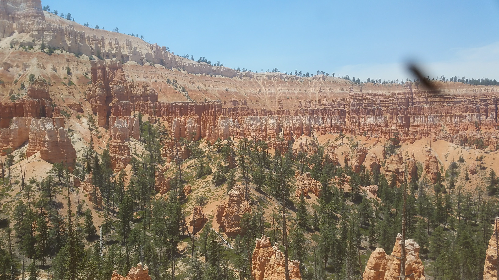The Bryce Ampitheater
Our first day in the park: we hiked the famous Navajo Loop, into the Peek-a-boo Loop, then finished with the Queen's Garden before hopping back on the Navajo. It was a challenging little hike through the bulk of the amphitheater, but it was definitely rewarding:
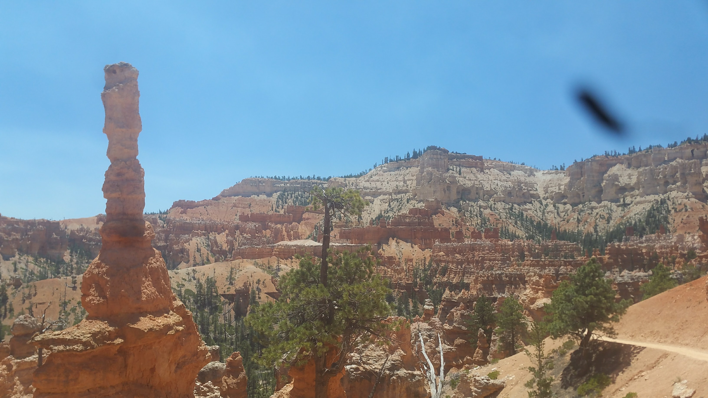 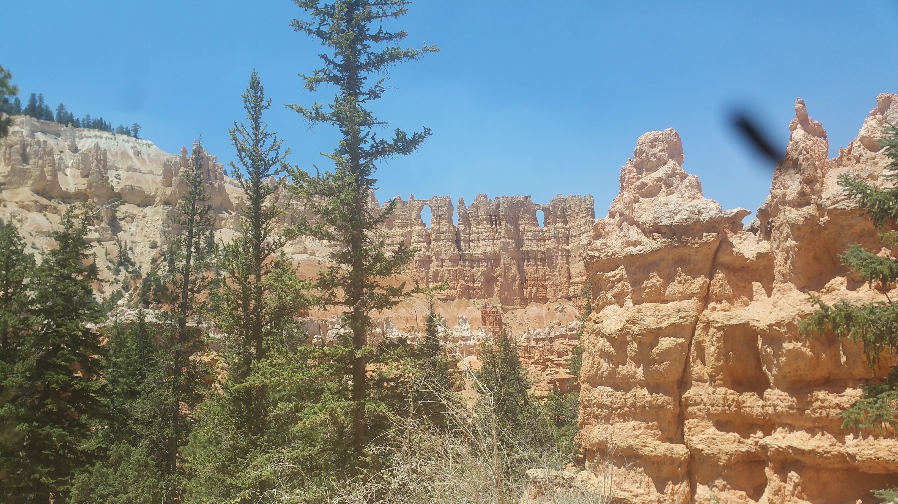Perhaps as rewarding (yet quite surprising) was the fantastic pizza at Valhalla Pizzeria--a little cafe right in the park! The "frills" were paying off. After a delicious meal, we relaxed with a beer at the park lodge.
Day 2 of Bryce we hiked to the "Hat Shop," or... thought we did. We hiked until the hoodoos were nowhere to be found, but didn't see anything much crazier than the Amphitheater (a ranger had told us the Hat Shop was the most interesting formations in the park). We checked out nearby Bryce Point, which had great views. From there we drove to the highest point in the park, Rainbow Point, and hiked the Bristlecone Trail. The view was amazing, if a bit ominous from the nearby Brian Head Fire.
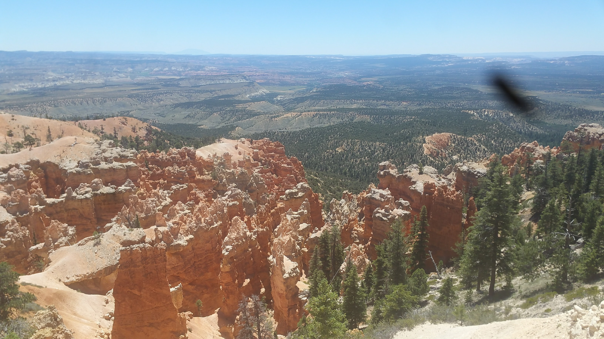Bryce Point
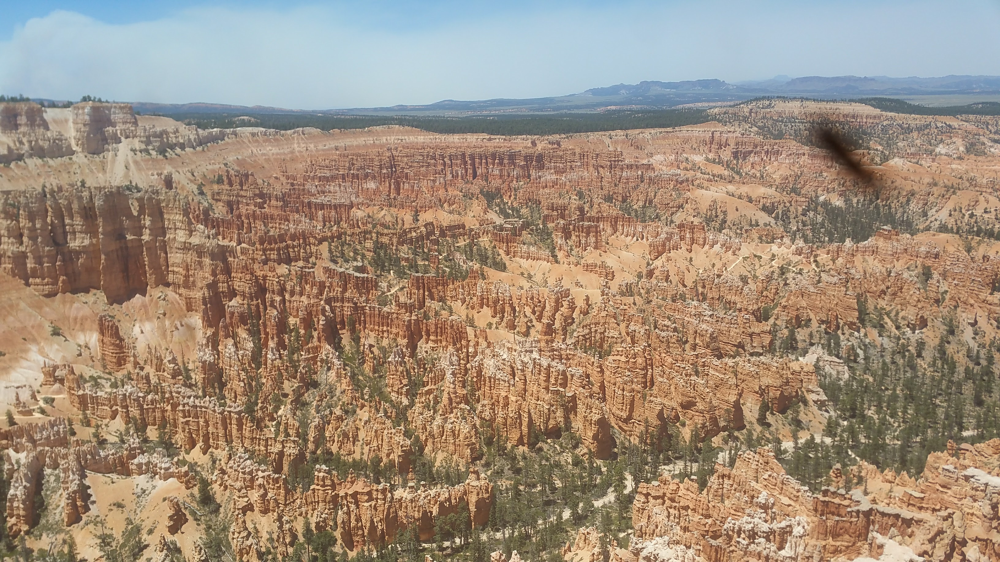
The "cloud" visible in these two photos is actually all smoke.
That afternoon, we happened to see the fire raging much closer.

The next day we departed Bryce and headed north for a brief respite from the desert in the Pando Aspen Grove (AKA Pando Forest, Pando Tree, the Trembling Giant). Quaking aspen trees are in fact the stems of single lifeforms known as root clusters. Quaking aspens are also one of the few plants to be dioecious (having sexualized reproductive organs), and males can get quite large. Pando's root cluster is believed to be over 80,000 years old, and his stems spread out over 100 acres! It was absolutely humbling to be in the presence of such a massive creature that appeared to my pitiful human mind to be many creatures. Despite some frustrations during our drive earlier in the day, we both sunk into a spiritual peace.
 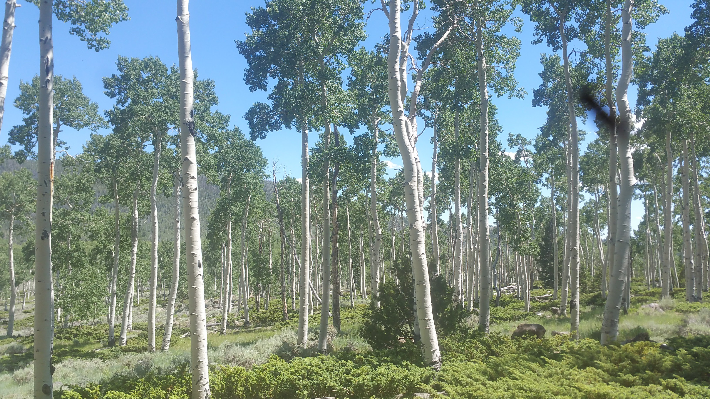
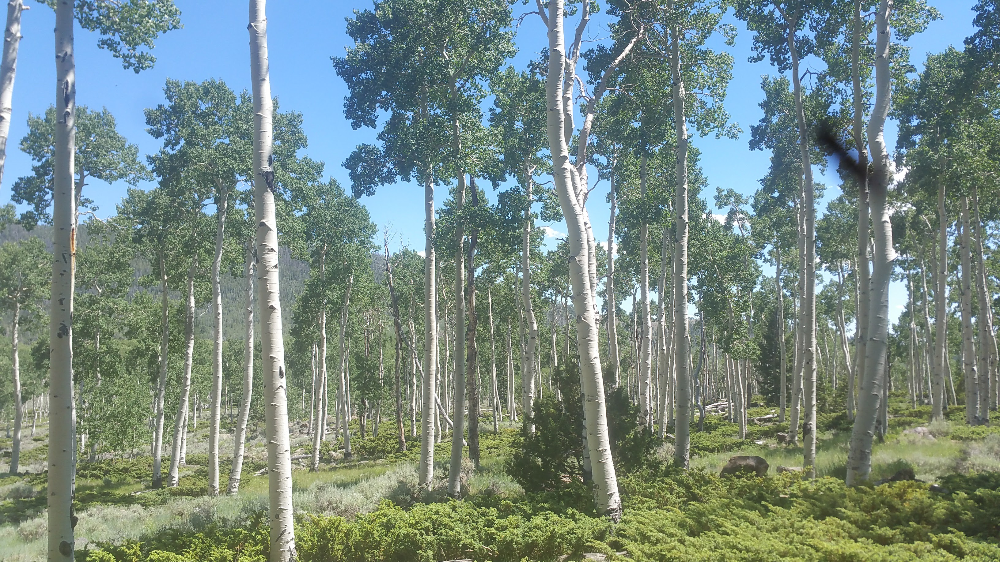
It's worth noting: Wikipedia and a couple other high Google searches state that Pando appears to be dying, and in fact the sign in the grove itself states that "the signs of decay are easily apparent around you" (or something to that effect). Yet while we were there, we saw only a small stand - at the highest tops of the mountain - looking anything but healthy and green.
After camping in a cozy National Forest site within the Grove, we awoke and prepared to leave the temperate climate and return to desert. Destination: Capitol Reef! Capitol Reef was named by early explorers (who were formerly sailors) that referred to the land impasses created by formations such as the park's Waterpocket Fold - a 65 million year-old deformity in the crust - as 'reefs'.
Our first day in the park, we briefly drove through the relatively-damp Fremont River Valley which had a number of fruit trees! A strange sight in the desert, yet even more strange is how common it seems to happen when there is water. There were ancient petroglyphs of the "Fremont Culture" (the name given to a local Pre-Columbian culture by American/European scholars), as well as graffiti from early Mormons and millennials alike. Respect the parks, yo! That shit is the worst.
After the river valley, we returned to the heart of the desert for an awe-inspiring afternoon drive across steppes of rainbow sandstone that went on far as the eye could see. Our destinations were the Temples of the Sun and Moon, and the Gypsum Sinkhole. Gypsum is a soft mineral composed of calcium sulfate dihydrate. It's a lot like really fine sandstone. When it gets near sandstone formations, it usually crumbles much sooner--leading to caves and sinkholes like this one I didn't take a photo of. Woops.
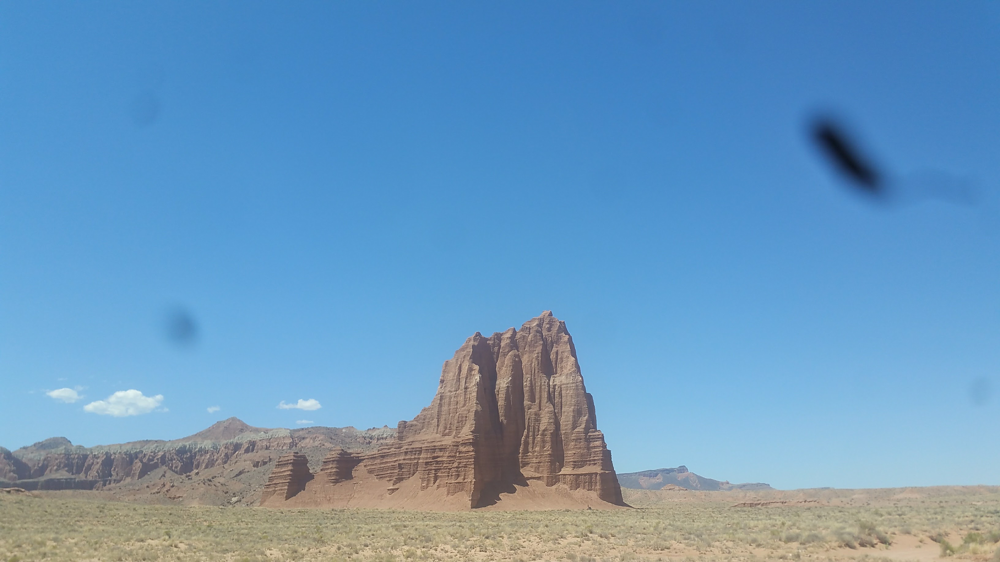PRAISE THE SUN (pretty lady on top of SUV for scale... she's there, I promise)
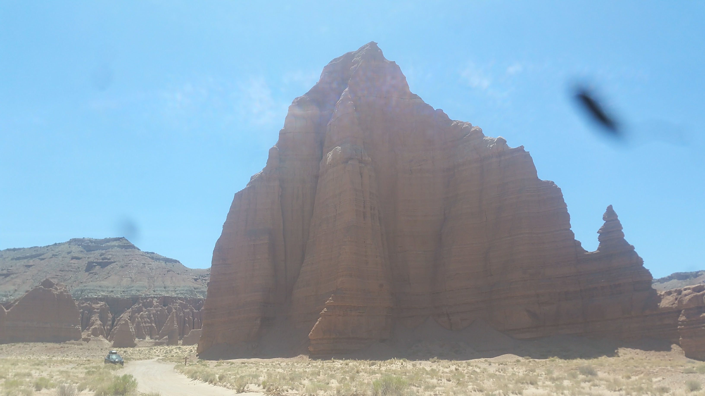PRAISE THE MOON (SUV for scale)
We camped that evening on a mountainside, right next to some cows. Funny enough: we were pretty close to Pando again, and planned to return to the main part of Capitol Reef again. But the drive to the campsite provided some pretty breathtaking panoramas, and the campsite itself was perfectly cool.

On top of that... the breakfast we got in Loa, Utah the next morning was incredible. And we made a new friend of the waitress, Tracy!
Next up was Chimney Rock, in Capitol Reef, then some short hikes through the center chunk of the park before finishing up with Capitol Gorge. The walls of the Gorge were carved by a number of Mormon explorers through the area. After that, we were in desperate need of some showers. We struck out for the afternoon towards Grand Junction, Colorado.
We stayed there for a day or two, before making our way back into Utah for the last two National Parks: Arches and Canyonlands! Better yet, we arrived in Moab to meet my good friend Matty for some drinks and Indepedence Day festivities.
The next few days we camped with Matt in BLM and National Forest land around Utah, while exploring both Canyonlands and Arches. On the 4th we went into Canyonlands...
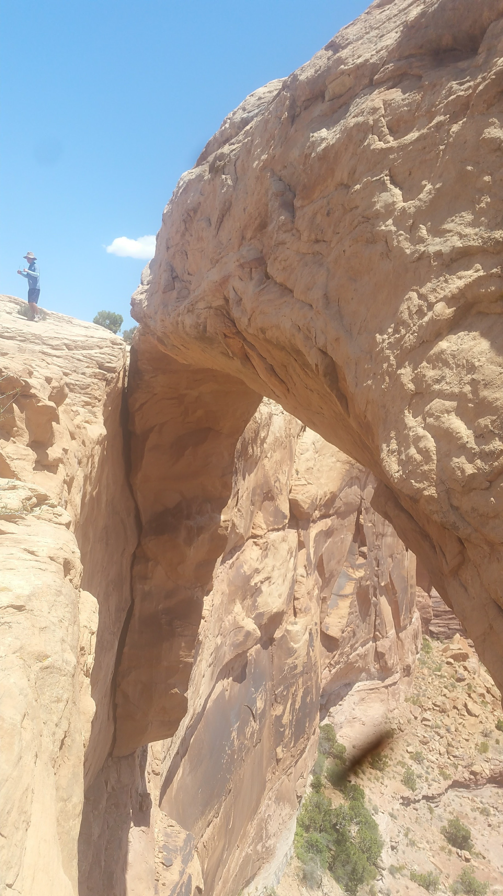Mesa Arch


The Grandview at Canyonlands. This is the place where the Green River meets the Colorado, before the Colorado goes on to carve out the Grand Canyon. Just like the Grand Canyon, Canyonlands is made up of an inner and outer canyon. The first picture gives you a sense of just how large the outer canyon is. The inner canyon here is topped by a white limestone bench, creating weird "hat tops" along cliff edges you see in the second photo.
The next day we ventured back in for Upheaval Dome, an unusual crater with a bright green stone dome in the center.
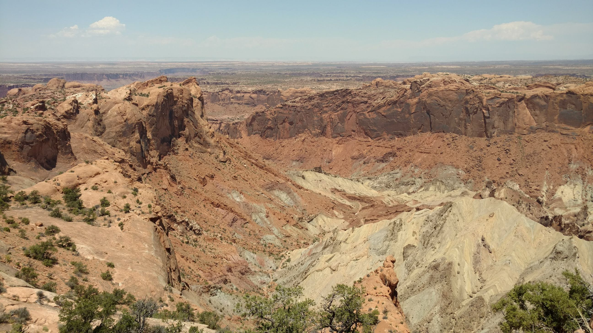The cause of Upheaval Dome is still unclear. Was it a rising salt bed that pushed up through the floor of an ancient sea? Was it a meteorite? Lacey, Matt, and I all preferred the latter answer.
After an evening that hosted the 3rd, 4th, and 5th annual Swisher Cups of the game Yaniv, we headed to Arches in the morning. It was a real, real hot one, so we elected to stay near the road and do some shorter ventures.
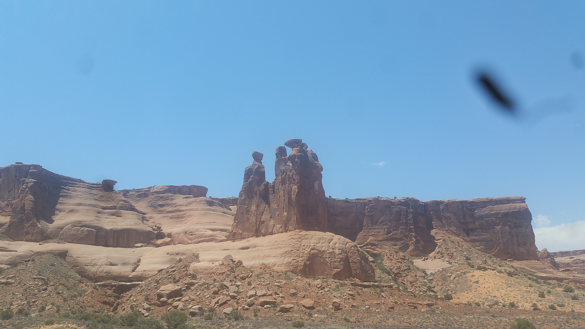The Three Gossips
 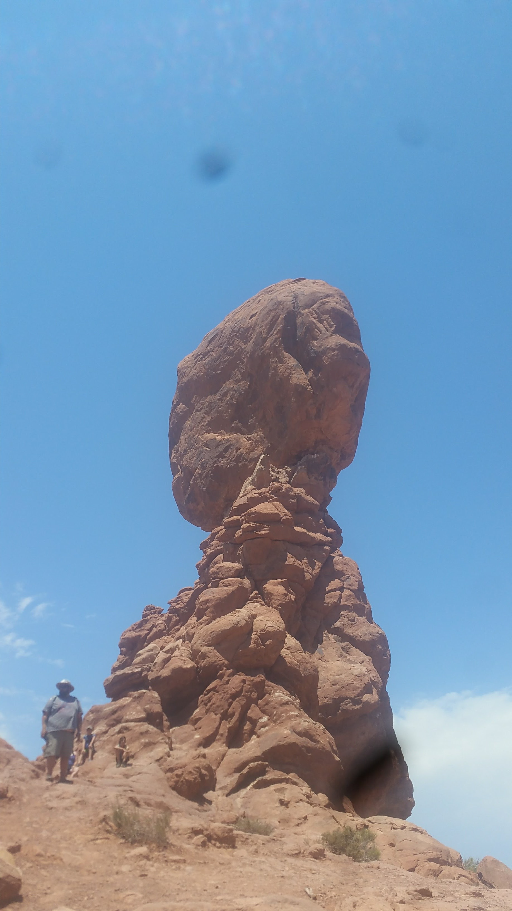
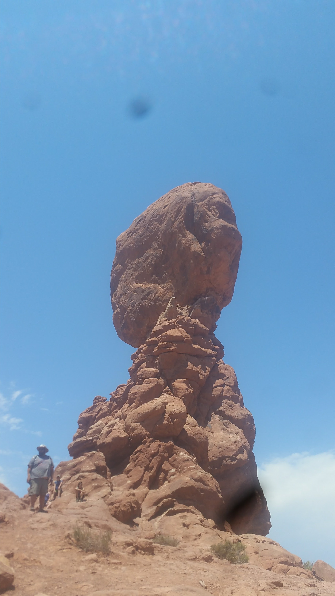
The Balanced Rock
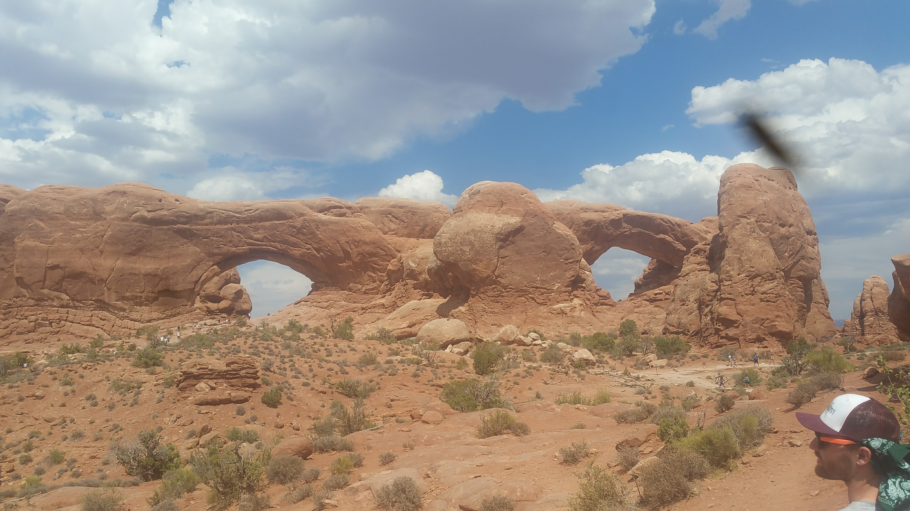The Window Arches
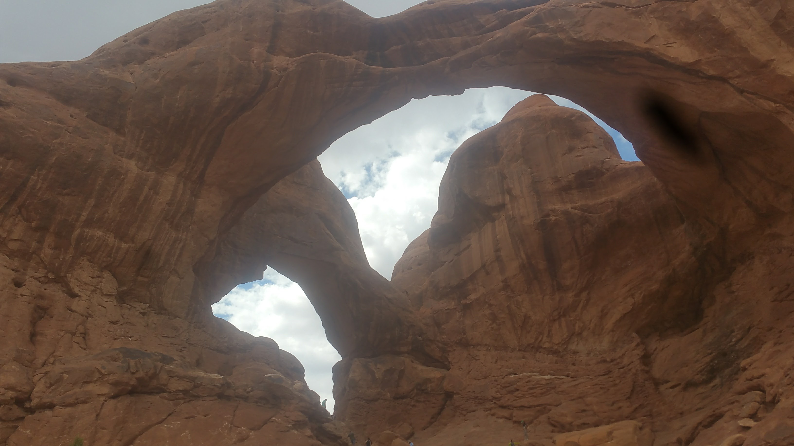Double Arch

Finally, Delicate Arch
After a hot day of chugging water, we spent one last evening getting drunk with Matty. We were at a new campsite up in the mountains, and found some plastic Army Men. What followed in the next hour or two was cinematic masterpiece. This year, expect "Fiery Furnace" to win an Oscar near you.
Matty departed for northern Utah the next day, while Lacey and I went to the Needles District of Canyonlands. The Needles are across the outer canyon from where we were earlier in the week--referred to as the Island in the Sky--which meant quite a bit of driving. Our intended destination, the Confluence Overlook - where one can see the Red and Green Rivers meet - was inaccessible to our little 2WD vehicle (and over a 10 mile roundtrip hike in 110 degrees), which meant we did some smaller destinations instead. The views were astounding anyways.
After that, we had one last hike we wanted to do during this visit to Moab area (there's honestly so much in that part of Utah we plan to return for): Delicate Arch. The picture posted above was from the viewing area, still about a mile from the actual arch. The hike to the arch was only 3 miles roundtrip, but on our day visit with Matty we all agreed it was too hot for even that. Lacey and I trucked up that slickrock bluff, seeing many families that were a little underprepared for the heat.
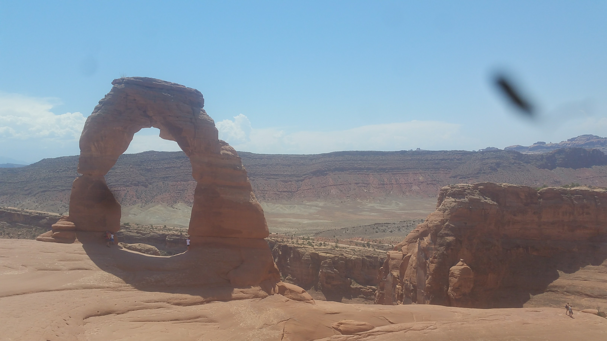Up close and personal (despite the families in front)
That evening (last night) we headed for Colorado. It was a familiar drive, but very nice nonetheless. We did some laundry this morning, now it's an evening of relaxing before we head for our next destination: Black Canyon of the Gunnison National Park! From there it's Mesa Verde National Park, Great Sand Dunes National Park, Boulder to visit with friends and family, and then into Wyoming once more! The trip is nearing its end, but we're making the most of it to the very last. Still a ton of people and parks to see. Very exciting.
Otherwise, not a long different. Working on some music, doing some writing (working on a very dorky wiki page to organize some of my fiction), playing games now and then. Very excited to see friends and family in the comings months.
Thanks for reading, love you.
Mileage: 26100
Weather: Hot, breezy, 102F
Currently listening to: Com Truise - Iteration